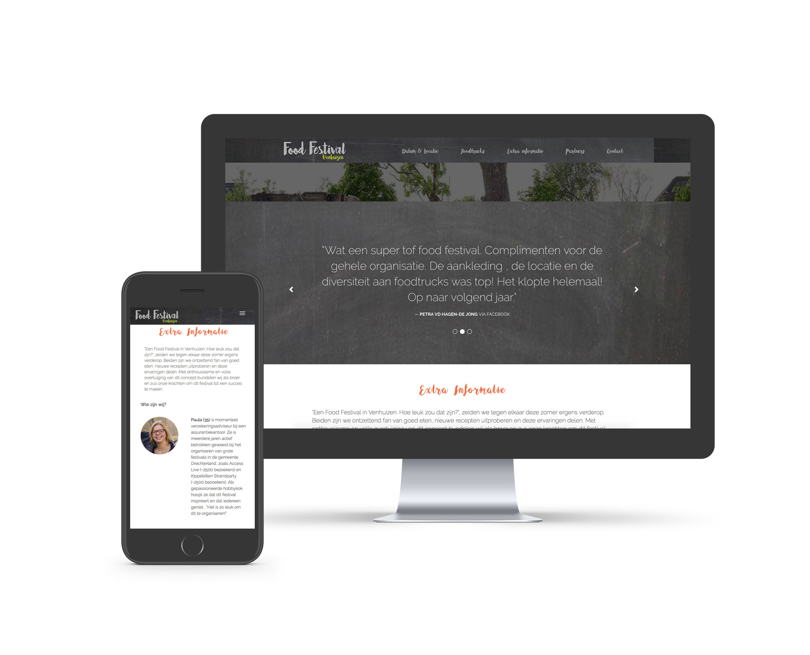

Begin mei 2017 vond de eerste editie van Foodfestival Venhuizen plaats. Voor dit evenement maakte ik een responsive website waarin alles over het evenement werd uitgelegd: Datum & Locatie; Informatie voor Foodtrucks; Wie er heeft meegeholpen het evenement op te zetten en social media en andere contact gegevens. Er was al een huisstijl ontwikkelt voor het evenement, dit bestond uit een logo, lettertype, kleuren en illustraties. Genoeg om een website mee op te zetten.
Ik ben samen met de organisator van het evenement, Ron Laan, gaan zitten om te bespreken wat er allemaal op de website moest komen te staan en hoe hij dit voor zich zag. Vanuit daar ben ik een aantal schetsen gaan maken en begonnen met het coderen. Ik had besloten de gehele website vanuit nul op te zetten, een uitdaging, gezien het tijdsbestek waarin het af moest zijn. Ik heb er ongeveer 2 weken over gedaan om de website werkend te krijgen, het was zeker niet perfect en werkte ook niet goed op alle devices, maar goed genoeg om live te gaan. Het eerste jaar was een daverend succes en de organisatie heeft besloten het weer te doen.
Een nieuw jaar, dit was voor mij een reden om die doorn in het oog te verbeteren en ik ben begonnen met het maken van een nieuwe website. Dit keer met een template voor de beginselen, zodat ik zeker wist dat hij dit keer helemaal responsive zou worden. Ik heb de vorige opzet laten vallen en ben met de huisstijl een andere kant op gegaan. Met nog genoeg tijd te gaan voor Foodfestival Venhuizen 2018 begint, kan ik een nog mooiere website ontwikkelen. 
Bekijk hier de voortgang van de website van Foodfestival Venhuizen